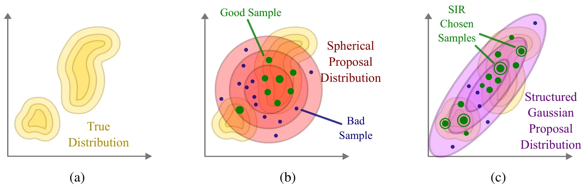
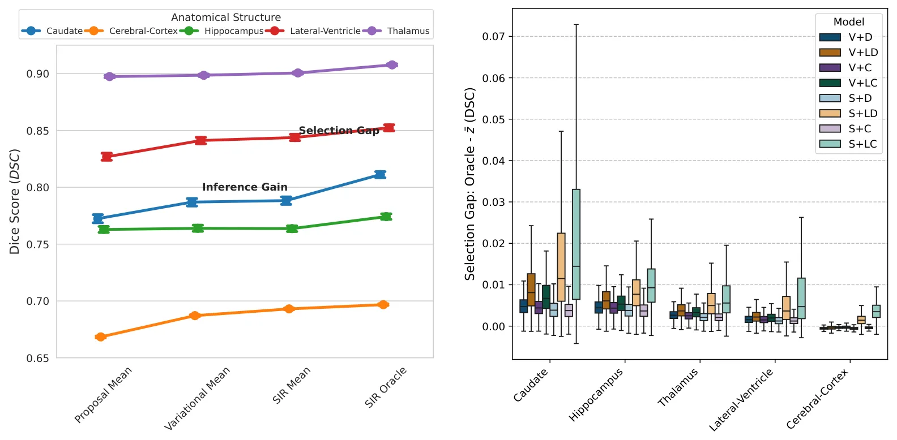
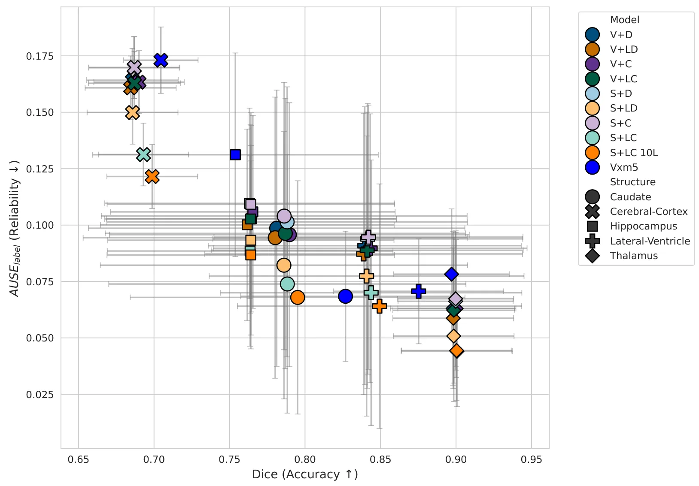
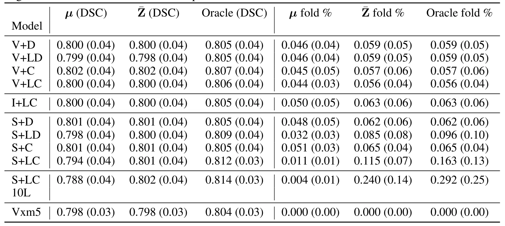

Structured SIR：高维 3D 图像配准中的高效重要性加权推断Structured SIR: Efficient and Expressive Importance-Weighted Inference for High-Dimensional Image Registration
不是 SLAM 场景，应用在 MRI；但高维配准、多峰不确定性和结构化 covariance 对因子图/配准鲁棒性有方法参考价值。
一句话工作总结
医学 3D 配准论文，但其结构化多峰 posterior 与协方差参数化对 SLAM/点云配准因子的不确定性建模有借鉴意义。
摘要
该文面向 3D dense image registration 的不确定性建模。传统变分推断常因后验形式限制而过度自信，难以描述多解和多峰分布；更灵活的后验又受高维 covariance 矩阵复杂度限制。Structured SIR 用 Sampled Importance Resampling，并把高维 covariance 表示为 low-rank covariance 与稀疏空间结构 Cholesky precision factor 之和，从而在内存和计算可控的情况下捕获复杂空间相关。论文在脑 MRI 3D 配准中显示出更好校准的不确定性和高质量多峰 samples。
Image registration is an ill-posed dense vision task, where multiple solutions achieve similar loss values, motivating probabilistic inference. Variational inference has previously been employed to capture these distributions, however restrictive assumptions about the posterior form can lead to poor characterisation, overconfidence and low-quality samples. More flexible posteriors are typically bottlenecked by the complexity of high-dimensional covariance matrices required for dense 3D image registration. In this work, we present a memory and computationally efficient inference method, Structured SIR, that enables expressive, multi-modal, characterisation of uncertainty with high quality samples. We propose the use of a Sampled Importance Resampling (SIR) algorithm with a novel memory-efficient high-dimensional covariance parameterisation as the sum of a low-rank covariance and a sparse, spatially structured Cholesky precision factor. This structure enables capturing complex spatial correlations while remaining computationally tractable. We evaluate the efficacy of this approach in 3D dense image registration of brain MRI data, which is a very high-dimensional problem. We demonstrate that our proposed method produces uncertainty estimates that are significantly better calibrated than those produced by variational methods, achieving equivalent or better accuracy. Crucially, we show that the model yields highly structured multi-modal posterior distributions, enable effective and efficient uncertainty quantification.
中文解读摘录
- 为什么看：应用场景是脑 MRI dense registration，不是 SLAM；但它围绕高维配准后验、多峰不确定性和结构化协方差，方法论上可为点云/体素配准的不确定性建模提供参考。
- 方法要点：用 Sampled Importance Resampling，并把高维 covariance 表示为 low-rank covariance 加稀疏空间结构 Cholesky precision factor，以降低内存和计算开销。
- 结果信号：作者称在 3D 脑 MRI 配准中比变分推断校准更好，且能产生结构化多峰 posterior samples。
- 跟踪建议：如果关注因子图/配准因子的协方差建模，可借鉴其结构化 posterior 表达；但需验证是否能迁移到 LiDAR/视觉几何噪声。
- 链接：abs · PDF
图表/页面预览
{kind=link}

{kind=link}

{kind=link}

{kind=link}
